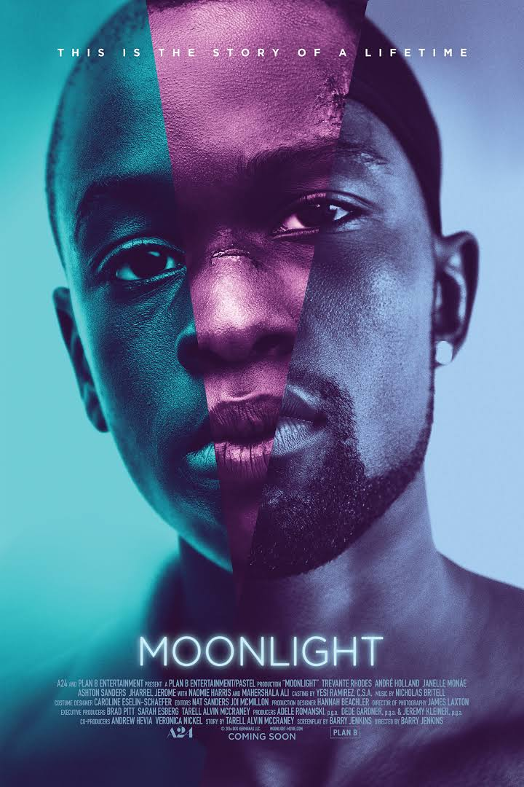
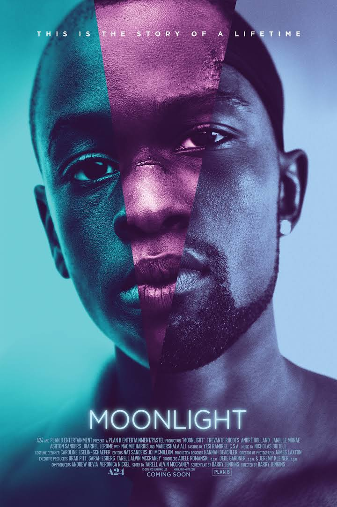

Flickr
Biography
Paulom Salahuddin

paulom_salahuddin
Member since 2004
Favorite Movie Genre: Sci Fi
Paulom Salahuddin
paulom_salahuddin
Member since 2004
Favorite Movie Genre: Sci Fi
1. Pulp Fiction (1994) - Pulp Fiction is a 1994 American black comedy neo-noir crime film written and directed by Quentin Tarantino, from a story by Tarantino and Roger Avary.Directed in a highly stylized manner, Pulp Fiction connects the intersecting storylines of Los Angeles mobsters, fringe players, small-time criminals, and a mysterious briefcase. The film's title refers to the pulp magazines and hardboiled crime novels popular during the mid-20th century, known for their graphic violence and punchy dialogue.

2. Goodfellas (1990) - Goodfellas (stylized as GoodFellas) is a 1990 American crime film directed by Martin Scorsese. It is an adaptation of the 1986 non-fiction book Wiseguy by Nicholas Pileggi, who co-wrote the screenplay with Scorsese. The film narrates the rise and fall of mob associate Henry Hill and his friends over a period from 1955 to 1980.
3. Whiplash (2014) - Whiplash is a 2014 American drama film written and directed by Damien Chazelle. The film stars Miles Teller, J. K. Simmons, Paul Reiser, and Melissa Benoist. The film depicts the relationship between an ambitious jazz student (Teller) and an aggressive, abusive instructor (Simmons).
4. Dark Knight (2008) - The Dark Knight is a 2008 superhero film directed, co-produced, and co-written by Christopher Nolan. Featuring the DC Comics character Batman, the film is the second part of Nolan's The Dark Knight Trilogy and a sequel to 2005's Batman Begins, starring an ensemble cast including Christian Bale, Michael Caine, Heath Ledger, Gary Oldman, Aaron Eckhart, Maggie Gyllenhaal and Morgan Freeman. In the film, Bruce Wayne/Batman (Bale), Police Lieutenant James Gordon (Oldman) and District Attorney Harvey Dent (Eckhart) form an alliance to dismantle organized crime in Gotham City, but are menaced by a criminal mastermind known as the Joker (Ledger) who seeks to undermine Batman's influence and create chaos.

5. Training Day (2001) - Training Day is a 2001 American neo-noir crime thriller film directed by Antoine Fuqua, and written by David Ayer. Denzel Washington and Ethan Hawke star as two LAPD narcotics officers over a 24-hour period in the gang-ridden neighborhoods of the LAPD Rampart Division and South Central Los Angeles.

6. There Will Be Blood (2007) - There Will Be Blood is a 2007 American drama film written and directed by Paul Thomas Anderson. It stars Daniel Day-Lewis and Paul Dano. The film was inspired by Upton Sinclair's novel Oil!. It tells the story of a silver miner-turned-oilman (Day-Lewis) on a ruthless quest for wealth during Southern California's oil boom of the late 19th and early 20th centuries. Kevin J. O'Connor, Ciarán Hinds, and Dillon Freasier are also featured in the film.

7. Godfather (1972) - The Godfather is a 1972 American crime film directed by Francis Ford Coppola and produced by Albert S. Ruddy, based on Mario Puzo's best-selling novel of the same name. It stars Marlon Brando and Al Pacino as the leaders of a fictional New York crime family. The story, spanning 1945 to 1955, chronicles the family under the patriarch Vito Corleone (Brando), focusing on the transformation of Michael Corleone (Pacino) from reluctant family outsider to ruthless mafia boss.

8. Spotlight (2015) - Spotlight is a 2015 American biographical crime drama film directed by Tom McCarthy and written by McCarthy and Josh Singer.[4][5] The film follows The Boston Globe's "Spotlight" team, the oldest continuously operating newspaper investigative journalist unit in the United States,[6] and its investigation into cases of widespread and systemic child sex abuse in the Boston area by numerous Roman Catholic priests. It is based on a series of stories by the "Spotlight" team that earned The Globe the 2003 Pulitzer Prize for Public Service.[7] The film stars Mark Ruffalo, Michael Keaton, Rachel McAdams, John Slattery, Stanley Tucci, Brian d'Arcy James, Liev Schreiber, and Billy Crudup.[8]

9. Lord of the Rings: Twin Towers (2002) - The Lord of the Rings: The Two Towers is a 2002 New Zealand-American epic high fantasy adventure film[7][8] directed by Peter Jackson and based on the second volume of J. R. R. Tolkien's novel The Lord of the Rings. It is the second installment in The Lord of the Rings film series, preceded by The Fellowship of the Ring (2001) and concluding with The Return of the King (2003).

10. Your Name (Kimi no Na Wa) (2016) - Your Name (Japanese: 君の名は。 Hepburn: Kimi no Na wa.) is a 2016 Japanese animated drama film written and directed by Makoto Shinkai and produced by CoMix Wave Films. The film was produced by Noritaka Kawaguchi and Genki Kawamura, with music composed by Radwimps. Based on Shinkai's novel of the same name published a month before the film's premiere, Your Name tells the story of a high school girl in rural Japan and a high school boy in Tokyo who swap bodies. The film stars the voices of Ryunosuke Kamiki, Mone Kamishiraishi, Masami Nagasawa, and Etsuko Ichihara.
11. Spirited Away(2001)- During her family's move to the suburbs, a sullen 10-year-old girl wanders into a world ruled by gods, witches, and spirits, and where humans are changed into beasts.
 12. Moonlight(2016)- A chronicle of the childhood, adolescence and burgeoning adulthood of a young, African-American, gay man growing up in a rough neighborhood of Miami.

13. Tarzan(1999)- A man raised by gorillas must decide where he really belongs when he discovers he is a human.
14. The Last Five Years(2014)- A struggling actress and her novelist lover each illustrate the struggle and deconstruction of their love affair.
12. Moonlight(2016)- A chronicle of the childhood, adolescence and burgeoning adulthood of a young, African-American, gay man growing up in a rough neighborhood of Miami.

13. Tarzan(1999)- A man raised by gorillas must decide where he really belongs when he discovers he is a human.
14. The Last Five Years(2014)- A struggling actress and her novelist lover each illustrate the struggle and deconstruction of their love affair.
 15. Back to the Future(1985)- Marty McFly, a seventeen-year-old high school student, is accidentally sent thirty years into the past in a time-travelling DeLorean invented by his close friend, the maverick scientist Doc Brown.
15. Back to the Future(1985)- Marty McFly, a seventeen-year-old high school student, is accidentally sent thirty years into the past in a time-travelling DeLorean invented by his close friend, the maverick scientist Doc Brown.